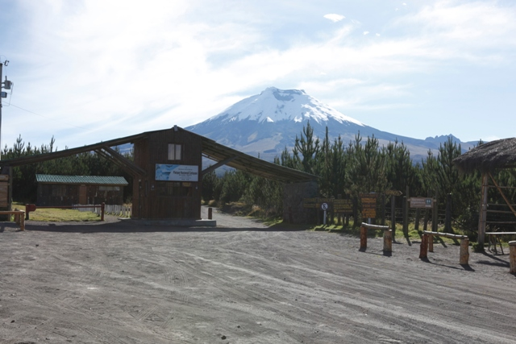

El Volcán es monitoreado las 24 horas, todos los días del año y cuenta con un sistema de alerta y comunicación que le garantiza información oportuna y seguridad al turista mientras visita el parque.
El Volcán es monitoreado las 24 horas, todos los días del año y cuenta con un sistema de alerta y comunicación que le garantiza información oportuna y seguridad al turista mientras visita el parque.|  |
BIENVENIDOS AL PARQUE NACIONAL COTOPAXI
El Volcán es monitoreado las 24 horas, todos los días del año y cuenta con un sistema de alerta y comunicación que le garantiza información oportuna y seguridad al turista mientras visita el parque.
Durante su visita es probable que presencie los siguientes fenómenos:
Siga las recomendaciones para su auto protección:
Es imprescindible que siga las instrucciones de la administración y de los guardaparques. Sea flexible en su plan de viaje, recuerde que el paso en algunos tramos puede restringirse por su seguridad.
RECUERDE
Estar atento a las alertas decretadas por las autoridades, las cuales se emiten en función de los cambios que se pueden presentar en los parámetros del volcán.